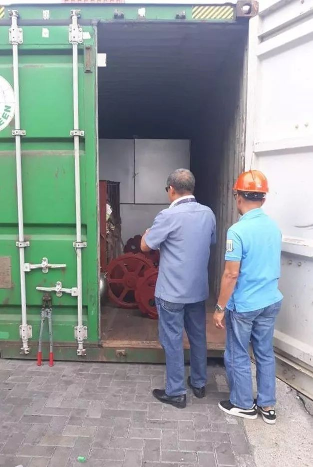
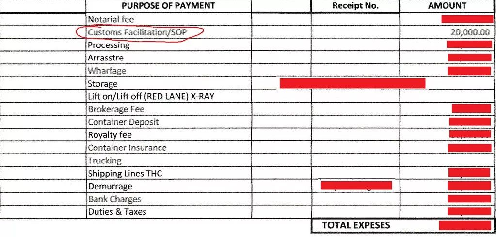

政观专栏：孙宇凡|当中国老板遇上菲律宾海关：分赃的政治经济学
收录于合集
作者简介： 笔名高行云，政文观止Poliview特邀作者，公众号Sociological理论大缸创办人，台湾中山大学哲学所硕士生，正在菲律宾做博士论文田野工作，努力搭上“一带一路”假装在发财。
“为遏止腐败，菲律宾总统杜特尔特命令部队暂时接管海关。”
—— The Filipino Times （2018年10月29日）
“如果说黑社会代表了公认的有组织犯罪，那么发动战争和缔造国家就算得上有组织犯罪之典范，是具备合法性优势的典型的黑社会。即使不能给所有的将军和政治家都安上“凶犯”或“窃贼”的恶名，我仍然想强调这个类比的价值。”
——查尔斯·蒂利：《发动战争与缔造国家类似于有组织的犯罪》（1982）
一、不速之客/官
根据世界银行的营商环境报告，在菲律宾开办企业要经过16个步骤，包括领取建筑许可证，登记注册等等。这意味着，任何在地上堆砖砌瓦、运输移位，都要有先行的执照。世界银行还没有说到一点：即使你在这片椰林王国砍掉一棵椰树，也要先和市椰子管理局备案和批准。但来自中国、资棉兰老岛的ARMM（Autonomous Region in Muslim Mindanao）一位老板，却是例外。
尽管他的工厂离国家公路不到100米，但掩在一片椰树之后，已至少砍掉了三四十棵椰树，浇筑了数百平方米的水泥地面和钢构厂房。这种便利，都是得到了这片土地的大地主豪华家族的支持：椰子局前任局长是自家兄弟，村长是当地伙伴，更不用提家族长辈也是这个省的前任副省长。
但是，厂房所需的一切机器都又要从中国进口过来。而上一个40尺的货柜，已经在海关卡了至少两周了。豪华家族权长莫及了吗？就在货柜放行的次日，2018年12月22日，却来了一位不速的客/官。
这位客/官递上中国驻菲大使馆一位安全官员的名片，接着递出自己的名片：原来同属一系，都是安全与缉查部门的官员，只不过他是供职在菲律宾海关。这位官员说到，自己就是这个城市的人，也认识豪华家族。接着，他又解释道：
你们刚提的那一柜是属于免检的，只是因为上周也有从中国来的一个免检货柜，被发现偷运毒品，所以我们才管制严格起来。我这一趟，也是来你们厂做些调查。
__
中国老板这才释然，然后自己的货柜被海关卡住，是大环境所致、无针对之心，说道：“经过这番折腾，应该是不打不相识了。”

二、 官商互利
中国老板告诉去海关帮他办理清关提货的、与豪华家族相熟多年的朋友阿瑞：
__
We have somewhat smoothened our relationship with the customs.
阿瑞当然非常高兴，真是松了口气！因为他已经冒着生命与法律风险，在前一天陪同海关官员一起开箱验货。阿瑞和中国老板都明白， 在所谓的开箱验货过程，只要官员往货柜里稍稍塞一包白色粉末，你就百口莫辩、在劫难逃。 中国老板也已告诉他， 不打不相识，该送黑钱送黑钱，能让通关更顺利何乐不为。 阿瑞听到这消息，更是松了口气，对老板终于决定接受菲律宾特色多加称赞，更说起自己如何得到这位官员关照：
I understand. He called me a while ago he said that he visited our site.he is the person who took first action to hold our container. … After you decide that we will give, after I gave to him,we become friends 。 Hehe, in fact he treat me into a goat restaurant. We ate lunch. After I gave him the money, he is very much interested to make friends with me. Will you believe that we were talking with a high tune voice? Hehe! After you decide to do so! He is very hospitable, care me like a big boss which I am not a big boss…Hehe. I command him to tell his subordinates to lower our payables and he did.That is why we are friends becuase he did what i said to him.
中国老板明白，对官员来说，这也是生意。谁不想在位的时候捞一把呢？ 每个官员都得在自己任期内权衡利弊，毕竟每个官职都价值不菲。当地的村长便告诉过他，自己为了当选，全村共700户，每一票给3000比索。而当地市长竞选，更是千万级起跳。 毕竟， 一旦当选，每月都有自己可分配的上百万比索资金。 从生意人的角度来看，这只是没有白底黑色的互利协议，我给你送黑钱，你帮我降低海关税费。因此，他这样教诲自己的伙计：
You have the war and peace tactics, which works well with the old foxes. He has toweigh whether war or peace will bring him more benefits.
三、 肥羊巡游
其实本来没有关税！
自从《中国—东盟全面经济合作框架协议货物贸易协议》签署以来，只需一张能证明出口产品来自中国的原产地证，就能让进入菲律宾的大部分中国工业产品降到零关税。菲律宾对中国出口货物，唯一且近乎无差异征收的，只不过是来自国内税务局（BIR）的12%增值税。
对于投资菲律宾建厂收购与处理上游原料、延伸产业链的中国老板来说，菲律宾有人有地有原料，唯一缺的就是机器及相关的工业制品。而中国在工业设备方面，尽管和美国在高精尖领域展开竞争还力有不逮，但是对于要用在第三世界国家的普通农产品加工业来说，工业制造成本已经降得很多了。更不用提，中国的钢材、零配件早已质量过硬且产能过剩了。正如一位中国技工看到棉兰老岛一些五金店的角铁等钢材时说：“这在中国连废标都达不到，更不用提国标了”。
但进出口的业务，并非生意人情愿的比较优势、互补互利。 卡在进与出之间的，是两个国家都触不可及的部门：海关。唯一能和海关接触的，不是生意人自己，而是作为代理人的货代（broker）。
阿瑞就是这样的身份。尽管他本职是个废品收购站老板，又有一辆只能拉40尺货柜的卡车，但 凭借和豪华家族的关系，先是揽下了将货柜从港口运往工厂的业务，又挤走了之前的货代，拿下了中国老板的代理人资格。
废品收购站老板去当货代？
在所有海关人员眼中，这不过是个新人。没人教他、提醒他哪儿会出错，更不用提多次要求开箱验货，要求原本免税的商品加收关税。
阿瑞想到很多可以和中国老板开脱的借口，比如作为收货人（consignee）的进口公司，持照过期，所以被海关卡住不放行，责不在他。比如海关的录入验证系统更新，要等马尼拉方面确认，自己也只能等待，和自己录入税号错误也没有关系。再比如，海关是默认至少要收10万比索/柜的关税，否则总是柜柜免税，就没法和上级交代了。甚至说，那些验货的人都是穆斯林，对我们天主教徒不友善。
最关键的是：为什么说好的要做生意朋友但收了20000比索/柜的黑钱，还是没有提供帮助？还是开箱验货、还要加税呢？要知道， 黑钱，在菲律宾和海关打交道的货代们的报价里，并不叫dirty money，而是叫budget，或者SOP（Standard Operating Procedure，标准操作规程）。

中国老板有些迷糊，让阿瑞交代清楚，到底是怎么送黑钱。阿瑞也知道事到如此，老实交代吧：
第一次送SOP的时候，那个保安头子告诉他，要买一些信封，各装入指定不同的比索。 由于海关各办公室都不知道我这号人，所以保安头子带着我去各个办公室绕一圈，并把我介绍给他们——当然，也包括我的信封。保安头子告诉我，谁和谁、要给多少钱。他们也都接受我给的数了。
中国老板这才发现大事不好。原来菲律宾海关和香港的经验不同。在他看来， 香港最黑暗腐败的时代，是由一位华人警察作为收款人，每日到衣帽间取信封，再由此一人去分发给各洋警官。菲律宾不是，而是巡游一般，每官员各自收钱。 中国老板训斥道：
When he introduced you to everyone he was declaring you are his captive! Give me your “budget” for each of the above.
阿瑞一一列出20000比索是怎么分的：
保安头子：5000比索
保安头子的秘书：500比索
……
检查头子：3000比索
检查员：3000比索
……
柜台收银：200比索。
中国老板并不在乎连柜台收银也给了200比索，而是看到屡屡施难的检查员团队，居然都只给3000元，并且头子和一般职员是均价。生意人的逻辑再次提醒它：这个赃，没分好。
阿瑞还在找借口，说道：
我每次都给了那个保安头子5000块钱呀，我也不知道如何摆脱他们。我记得之前的那个货代告诉过我：“按他们的规则办就行了”。他还告诉我，其他进口商被收得更多呢，我们已经是打了折扣。
中国老板已经厌倦了阿瑞的说辞，也厌倦了海关的折腾，只留给他一句话：
You probably forgot that I do business in one of the most corrupt countries in Asia for thirty years. I have dealt with many corrupt officers. You approached them in a most self-disadvantaged manner. Clearly a new face is needed to reset the SOP.
** _
_**
四、 毒蛇，不止一只
阿瑞被换掉了。新的货代是豪华家族的朋友的朋友，名叫阿力，专职货代，关系不近。这次应该没问题了吧。海关不会再看到那个熟悉的肥羊了。中国老板大大方方地，一口气往菲律宾工厂运了四个货柜来。
第一个货柜清关时，相安无事，零关税，也只收了12%多的增值税。中国老板也没有理会报价里还列入了20000比索的黑钱，因为相信这个黑钱发挥了作用，抵掉了海关又想伸手收关税的麻烦,压平了增值税。但是从第二货柜起，关税又被加了进来。为什么每个货物都有原产地证书，但还总要被加关税呢？为什么黑钱又不起作用了呢？
阿力告诉中国老板：
我又被那个保安头子叫了过去。他知道这个货是您的，也知道之前是阿瑞清关的。现在轮到我了，我也没办法。我拒绝给他这个钱，但他也直接和我说，让我最好不要拒绝，因为这个黑钱标准已经被阿瑞建立了，砍不下来的。如果我要讨价还价，那么他们会认为我们申报的货柜价值有假，还要再重新定价、加收税金。
阿力是无辜的。他只是接了一个烂摊子。更何况，他已经努力让中国老板支付的所有清关费用（给海关、港口局和船务公司）降到迄今以来最低水平了。中国老板知道再力争也没用，阿力每报价便一口答应，只想尽快清关，下次彻底换进/出口公司名等信息，把自己完全藏起来。阿力也一样没法再用，毕竟他也没实力制服这个保安头子。
中国老板开始想了很多办法，比如换港口。但好在是，豪华家族打听到：海关的重要官员是三月一轮调，这个毒蛇马上就要调到另一城市去了。
首要任务就是换个货代。中国老板请合作的豪华家族朋友帮忙，找到一个从马尼拉那边退休回到棉兰老岛的老货代，经验丰富、收费公道。结果，老货代说：“我不敢接手，因为那是阿力的生意”。
原来， 会咬住人不放的，不止海关，还有货代。 现在不仅要制服咬住人的海关，也要制服缠上身的货代。 难怪中国老板另有一柜从中国出口到马尼拉时，想请来自棉兰老岛的一位货代去帮忙清关，但他也一口回绝： 即使执照是国家颁发的，生意却是分区的，不应跨出自己的地盘插手。
五、 羊毛出在羊身上
“就算摔倒，起身时也要抓一把沙子。”这是中国老板常挂嘴边的一句话。那谁来为这些损失买单？
中国老板想到之前有次联系过中国驻菲大使馆，投诉外资公司注册多月未果。大使馆工作人员的解释明确： 这种事情，你找大使馆也没用，要找你们的当地合作伙伴，肯定要是大家族。这是菲律宾国情。
中国老板暗自盘算道：
你们家族头人不是喜欢说自己是这个城市的“教父”吗？我现在就让你当教父。我用你们的头人当收货人，我看海关、货代还敢不敢找麻烦。如果还找麻烦，那说明你们的安全保护不力，到时我们合伙算帐时，我就要和你谈了：说好的我以经济投资入股，你们以安全保护入股。究竟你保护了多少？又该分到多少股呢？
编辑：杨端程


政文观止
微信扫一扫赞赏作者 __赞赏
已喜欢，对作者说句悄悄话
取消 __
发送给作者
发送
最多40字，当前共字
上一页 1/3 下一页
长按二维码向我转账
受苹果公司新规定影响，微信 iOS 版的赞赏功能被关闭，可通过二维码转账支持公众号。